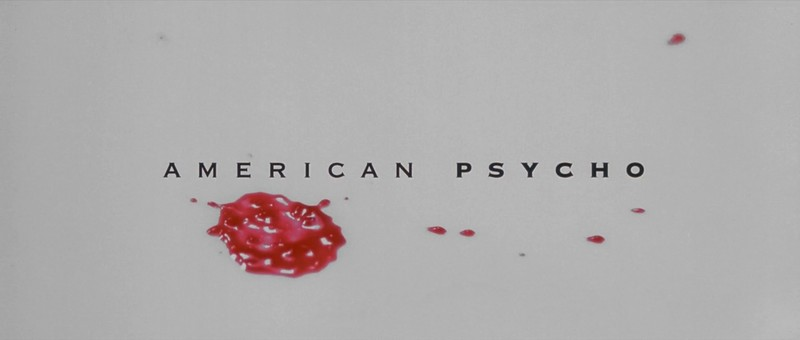
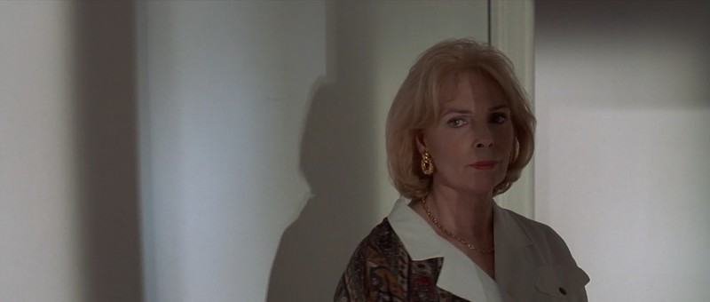

The underrated brilliance of American Psycho
You like Huey Lewis and The News?
I've seen a lot of movies, and Mary Harron's 2000 psychological thriller American Psycho is one of my favorites of all time. Yet for some reason it seems like this masterpiece has mostly flown under the radar, seen as a curious but shallow origin of memes, and remembered with a casual "oh yeah, that was alright." This lack of acclaim for a film I rank among the likes of 2001: A Space Odyssey and The End of Evangelion is great injustice in my eyes, so I will try to explain what I like so much about it. Be warned, there be spoilers here, so for the best experience go watch the film first and come up with your own explanations, then come back and read this.
What makes it good?
American Psycho is the rare type of movie that works on every level. If you turn off your brain and just view it as a dark comedy about Christian Bale being insane and killing people, it's excellent. If you delve deeper and look at it as a look through the eyes of a deeply mentally disturbed individual struggling to control his murderous sexual urges, it's excellent. If you go even deeper and see it as a commentary on the uncaring, unfeeling, self-absorbed world of the business elite, it's excellent. It just works on every level, never failing to be both entertaining and thought provoking.
From a technical standpoint American Psycho almost perfect. There are a few small flaws, like Patrick's phone ringing only once before going to voicemail while he's at his apartment with Jean, or "Acquisitions" being spelled wrong on every business card, but as a whole it's a solidly made film.

The soundtrack is full of out-of-place upbeat 80s pop songs, which perfectly fit the vapid, consumerist nature of the characters (which I'll discuss more below).
Can you keep it down? I'm trying to do drugs
The writing is also brilliant. American Psycho has to be one of the most quotable movies I've seen. Each line is carefully crafted, and tells you something important about the character and the way they view the world. When, in a rare emotional moment, Courtney asks Patrick "Can we talk?" he looks at her for a minute and responds with "You look... marvelous. There's nothing to say." The line shows Bateman's disdain for her as a person, but also shows his assumption that if a woman wants to talk to him it must have to do with how she looks, mirroring an earlier conversation with Jean.
It's also just really funny. From Patrick's detailed discussions of Phil Collins and Huey Lewis and the News to Bryce's idiotic claim that "like, the Sikhs are killing tons of Israelis over there" in Sri Lanka, American Psycho is a top-tier comedy that doesn't need to sacrifice its message to be entertaining.
Finally, while the cinematography isn't quite as beautiful as the likes of Barry Lyndon or 2001, there are still some great shots.


And of course there's the acting. Christian Bale is excellent in the lead role, but many of the minor characters also have great performances. Willem Dafoe's incompent but creepy Detective Donald Kimball, Jared Leto's enviable Paul Allen, and Chloe Sevigny's often-harassed Jean are all memorably portrayed.
What does it all mean?
Now for some analysis. Patrick Bateman is the personification of late 80s materialism. He quotes album reviews and restaurant critics verbatim from memory, and his entire personality is based on brands and products. In his opening monologue, we learn where he lives before we even learn his name. The only thin that actually scares Bateman in the movie is the realization that Paul Allen's apartment is nicer than his.
I even, um... I ate some of their brains...
He is the ultimate consumer, to the point that he literally consumes people. But he is not unique in this. Everyone at Pierce & Pierce dresses the same, talks the same, and buys the same things. They all do nothing at work but go out to lunch and show off their business cards. Bateman is a kind of sociopathic alien outsider, observing the world of rich yuppies and simply trying to copy it. As he tells Evelyn, his supposed fiancé, he keeps the job "Because I want to fit in."
Bateman does all the same things as Bryce, Van Patten, and McDermott, he just takes them a a little too far. Everyone is so self-absorbed, only focused on themselves and their own lives, that they don't notice what's going on around them. Because everyone just wants to "fit in," they all end up looking identical.
In the first scene, Bryce mistakes someone else for Paul Allen. Allen mistakes Bateman for Halberstram. A Stephen Hughes claimed he saw Allen at a restaurant in London, but "he mistook a Herbert Ainsworth for Paul." The real Marcus Halberstram claimed he had dinner with Bateman on the night of Paul's disappearance, but he was mistaken. Harold Carnes mistakes Bateman for someone named Davis. Carnes also says he had lunch with Paul Allen London, but did he really? No one can tell anyone apart, and they don't really care.
Allen has mistaken me for this dickhead, Marcus Halberstram. It seems logical because Marcus also works at P&P, and in fact does the exact thing I do. He also has a penchant for Valentino suits and Oliver Peoples glasses. Marcus and I even go to the same barber, although I have a slightly better haircut.
No one in the film (except maybe Jean) cares about anything but their own life. Bateman confesses four times to four different people, and all four times they either weren't listening or dismissed it as a joke right away.
The real truth of American Psycho is that Patrick Bateman gets away with murder not because he's a criminal mastermind, but because everyone else is too selfish to notice or care.